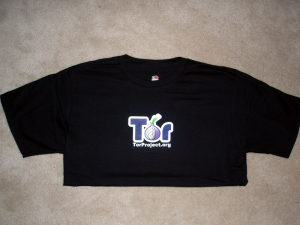
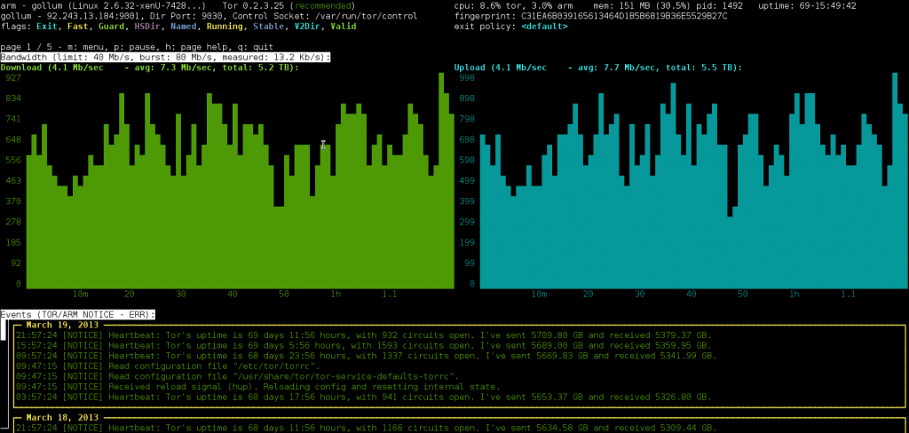

How to Get a Tor Project T-Shirt For Less Than $65
The Tor Project is awesome. It’s a network of volunteer proxy servers that make it possible for people to use the internet anonymously.
I decided to contribute to the Tor network by running my own exit node called gollum. I’m paying Gandi $16/month for a VPS in Paris, France. As of this writing the uptime on my Tor server is 69 days, 12 hours.
A couple days ago I was excited to receive this email from the Tor Weather service:
This is a Tor Weather Report.
Congratulations! The node gollum (id: C31E A6B0 3916 5613 464D 1B5B 6819 B36E 5529 B27C) you’ve been observing has been running as an exit node for 61 days with an average bandwidth of 1418 KB/s, which makes the operator eligible to receive an official Tor T-shirt! If you’re interested in claiming your shirt, please visit the following link for more information.
https://www.torproject.org/getinvolved/tshirt.html
You might want to include this message in your email. Thank you for your contribution to the Tor network!
So for only $32 I get a Tor t-shirt. I’m sure if you find a good web host you can get one for even cheaper. Go ahead and do it! If you do, I recommend finding a web host that’s not in the United States, and that you try following these tips for running a Tor exit node with minimal harassment.
Also, there’s a really nice command line program called arm that’s useful for monitoring your Tor server. Here’s a screenshot from gollum’s arm:



Legacy comments, imported from previous version of this blog:
Ann Onymous
March 20, 2013 10:37 AM
I have done exactly this last year. After 2 months, Tor Weather emailed me about the shirt, but unfortunately the Tor Project is so backlogged on those that it was only 9 months later that the shirt finally shipped. I kept the node running during all of that time, which cost me a lot more than $65. I don't regret doing that though.
micah
March 21, 2013 11:16 AM
I think they must be doing better. I got a response right away, and now my t-shirt order is being processed directly from the company that prints them.
null pointer exception
December 23, 2015 07:24 PM
I know this post is a bit old; however, I'm thinking about paying for a VPS. Is there a particular reason you went gandi? Do you recommend them?
Sally Forth
March 20, 2013 05:07 PM
I'm considering following the advice at unhosted.org and using a rented VPS in a nice friendly country for my web-app dealings. Would it be a terrible idea to use the same machine as a Tor node, even a non-exit relay?
micah
March 21, 2013 11:25 AM
There are a couple things that could happen if you decide to use an active web server as a Tor node. The IP addresses of all Tor relays, middle and exit, are public. They have to be, or the Tor client wouldn't be able to use them to build circuits.
I think there are plenty of situations, especially for static websites, where none of these are that big of a concern though.